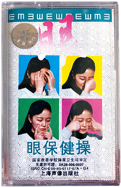
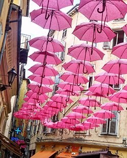

JAN 21, 2021
Best practices for form design
From reading about the article, “Best practices for form design”, I learned that input fields on forms should be kept to a minimum, one-column designs are preferred, and emphasizing the input field is recommended. I started reflecting on my own past experiences with long forms with multiple fields, and imagined a possible solution to the problem. Perhaps if the form only showed one input field at a time on screen, users would feel less overwhelmed and intimidated by the amount of input fields. It would also place greater emphasis on each individual question, thus making it clear to users what action is needed from them at that point in the process. A one-column layout could be used to prevent the user from being distracted from any sidebar content or secondary tasks. However, this solution creates ambiguity between the process and the user; the user might not know how many more fields they must fill out, and get tired of the process. This solution lacks transparency, and would need to indicate to users which step of the process they are currently on.
JAN 28, 2021
Best Practices for Modals / Overlays / Dialog Windows
Prior to reading this article, I assumed that modal windows were used as error prevention. For example, when closing an unsaved file on Adobe Illustrator, a modal window pops up and prompts you to either save, not save, or discard the file. I have used this feature countless times when I accidentally click the close icon without saving my work. However, the article suggests displaying error, success, or warning messages on the page, instead of on a modal window. This concept reminded me of uploading photos to an online service, like Google Drive, where users are given feedback on the status of their files. For example, in the bottom right of the screen, Google Drive displays, “uploads complete” instead of popping up a modal window to notify users the status of their files. Using a modal window tends to distract the user, or create a pause in their normal flow of work. Oftentimes, my first goal as a user when prompted with a modal window is to find a way out of it, or as the article says, an “escape hatch”. A clear sign of a fraudulent website is the use of uninvited and inescapable modals. Thus, following the article’s guidelines about incorporating “cancel” buttons and making the modal user initiated will not only create a comfortable user experience, but also build trust between the user and the site.
FEB 3, 2021
Visual Thinking
Photography is powerful because it can be used to introduce a physical reality, since many photos are usually of physical, real-life things or people. I am interested in recreating the physical experience digitally, especially now with COVID-19. Vogue’s “Photo Vogue Festival” website is a good example of digital design using photography to reference physical experiences. The Vogue website uses a subtle paper texture as the background, which sets the scene and subconsciously provides context to the user. Furthermore, the photos are non-uniformly stacked on top of each other, with some having paper-like wrinkles and rough edges. Vogue also uses a handwritten typeface in conjunction with hand drawn icons. These design choices make the user feel like they are viewing a physical moodboard, scrapbook, or magazine. When hovering over elements, objects smoothly move, rotate, and enlarge. This hover effect reminds me of physically interacting with a table filled with polaroids, and categorizing the photos by moving your favorite ones aside. Vogue not only uses digital design to recreate physical experiences, but also enhances them. When clicking a photo, the users are seemingly brought into the building, or environment of the photo, using a zoom-in transition. Instead of a normal slideshow, Vogue presents photos in what seems to be a fancy hallway, covered in sand. Thus, the photos are being presented as if the whole experience was in a physical setting (a hallway), but the digital domain provides even more opportunities to create experiences not easily found in reality (the hallway is covered in sand).
FEB 10, 2021
Visual Thinking Analysis Part 1
I took a photo of this cassette while helping my mother clean out some shelves. It was stacked with many other cassettes in an old Nikes shoebox. This particular cassette stood out to me because of the saturated color blocks and unconventional poses. At first I found the cassette cover design really funny because it seemed like the girl was having a tough time, yet was paired against oddly bright and playful backgrounds. However, after asking my mother about it, she informed me that the poses were supposed to be exercises that improve eye-health. She described how the whole box of cassettes were her collection from the 80-90s, with some from Beijing China, and others from Michigan, US. I enjoyed exploring the box of cassettes and discovering hidden gems that lead to more anecdotes from my mother. This image relates to the topic of my collection because it is a vintage cassette from China, that was initially curated by my mother, and then curated again by her daughter (me). I find it interesting how certain knowledge or aesthetics can be captured in physical items and live through different generations.

Rochelle Dai, 2020
FEB 10, 2021
Visual Thinking Analysis Part 2
The photo below was captured by Ivy Wang, and depicts rows of pink umbrellas strung together in the air. The umbrellas hang over the walkway, as if it is a ceiling. The location seems to be a narrow alleyway, with small shops on the side. The umbrellas look freshly covered in light rain, which indicates that the climate of this location is probably on the colder side. The organization and positioning of the umbrellas are clearly intentional and signifies that it is more of an artistic choice rather than a practical solution. This might also mean that this location is a popular photo spot, due to the unique art installation (pink umbrellas). Thus, this photo makes me curious about where it was taken, and if there are any other unique photo spots. Interestingly, the umbrellas seem to be suspended in the air without any support, which appeals to the viewer’s imagination, where physics isn’t a constraint.

Ivy Wang, 2021